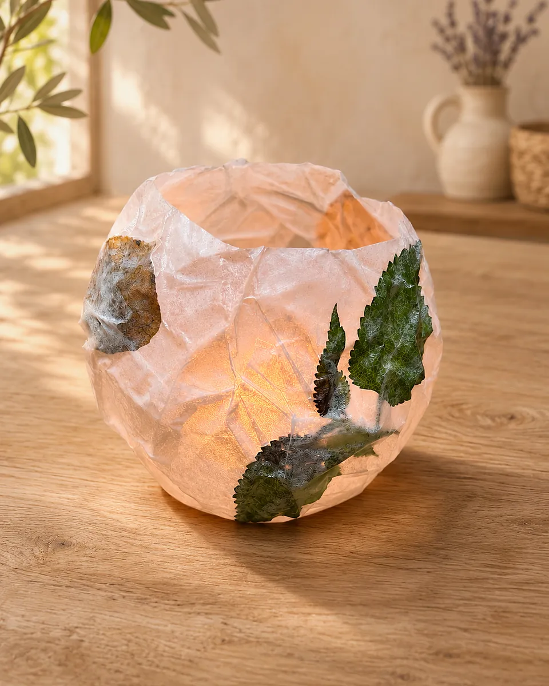
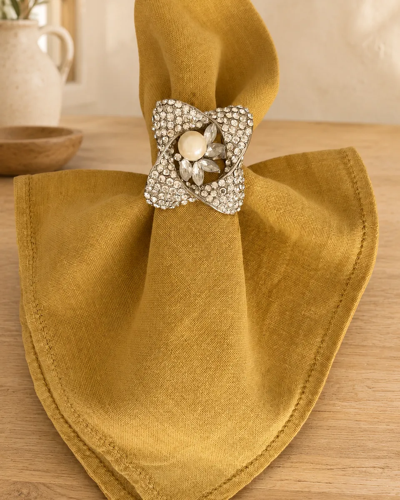
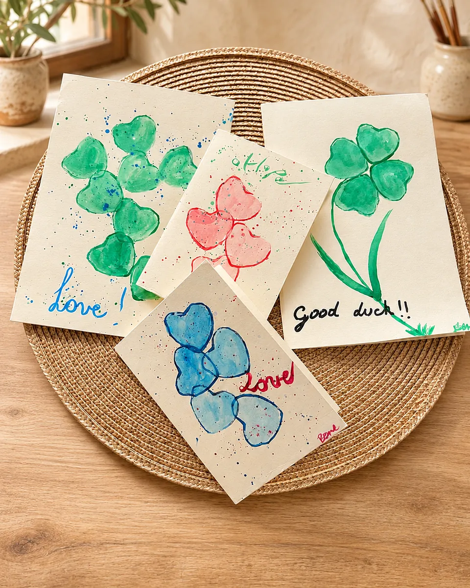
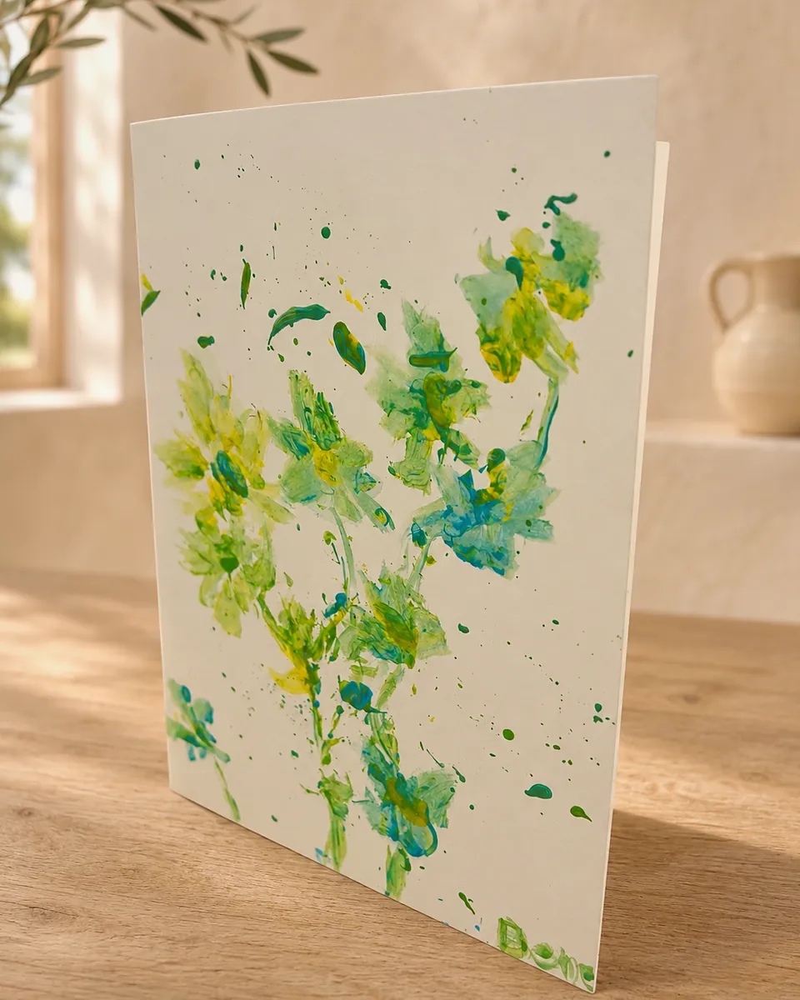
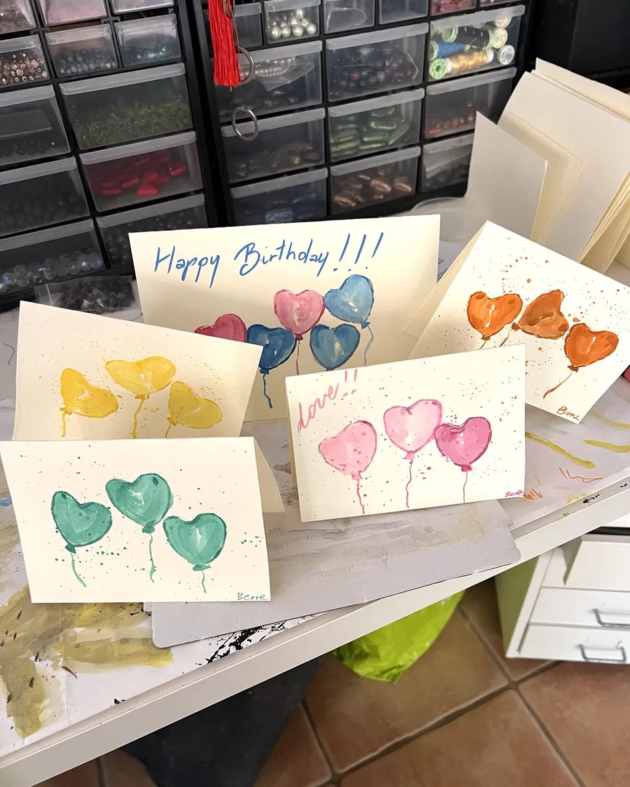
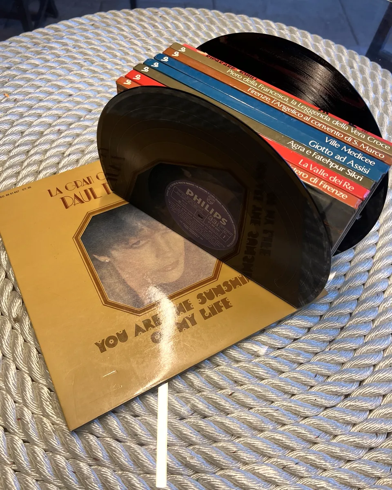
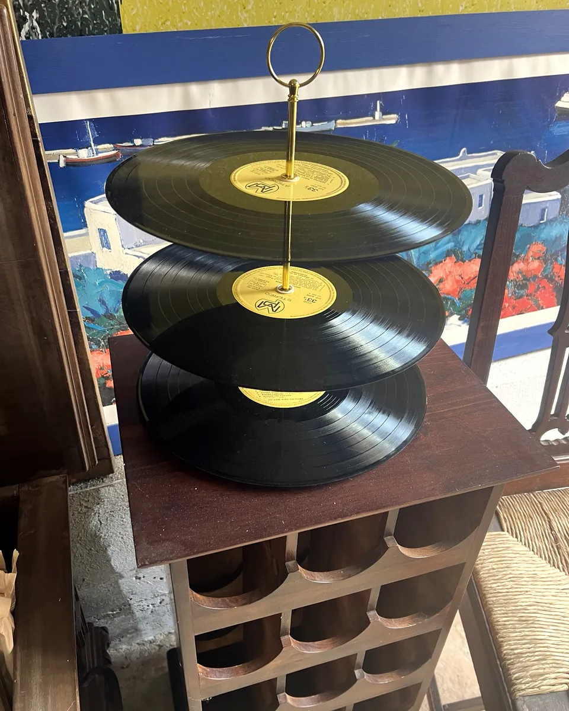

Hecho a mano con alegría
Pequeños objetos.Mucho corazón.
Hago faroles, joyas, tarjetas pintadas y objetos con una segunda vida. Todo a mano, con mucha imaginación y mucho cariño.

mi pieza favorita ♡
¡Ven a verme!
Estaré en el Mercado Solidario de Artesanía
Llevaré todos mis proyectos nuevos para venderlos en persona. Es un mercado navideño de la Fundación Livingstone: un plan bonito para encontrar regalos hechos a mano y apoyar una buena causa.
- CuándoSábado 12 y domingo 13 de diciembre, de 10 a 14 h
- DóndeVivero Natura, Puçol
Creo porque me hace feliz. Y porque las ideas no paran de llegar.
Me encanta trabajar con las manos: probar materiales, mezclar colores y ver cómo una idea se convierte en algo que se puede tocar. Me gustan todos los colores, las pequeñas tiendas llenas de objetos únicos y descubrir qué puede llegar a ser algo que otros tirarían. Cada pieza me sale distinta, y eso es lo bonito.
Lo que sale de mis manos
Si se me ocurre, lo intento.
- Faroles y lámparas
- Collares y colgantes
- Pulseras
- Servilleteros
- Tarjetas pintadas a mano
- Jarroncitos de pared
- Objetos hechos con vinilos
- Encargos personalizados
Algunas de mis ideas
Una pequeña muestra. Hay muchas más en mi Instagram.












Lo viejo también tiene ideas
Una de las cosas que más me gustan es dar una segunda vida a los objetos. Unos discos olvidados se convierten en cuencos, bandejas o un soporte para la mesa. Antes de tirar algo, siempre me pregunto: ¿en qué podría convertirse?
«Lo que más me gusta es trabajar con mis manos y ver la pieza terminada. Ojalá sientas un poquito de la alegría que sentí al crearla.»Bene
¿Te gusta algo? ¿Tienes una idea?
Escríbeme para preguntar por una pieza, pedirme un encargo o simplemente saludar.
¡Te contesto encantada!